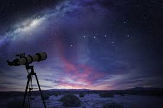
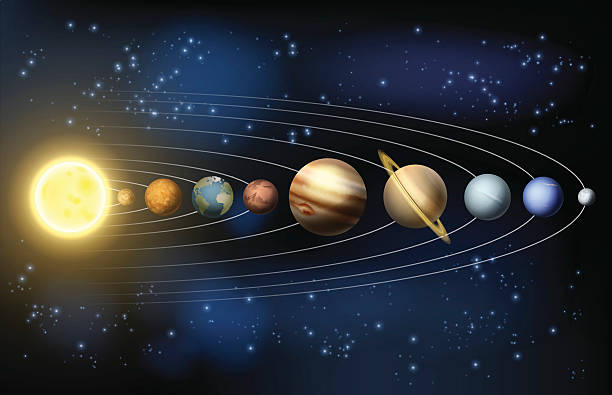
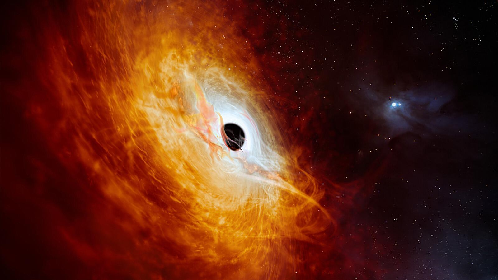
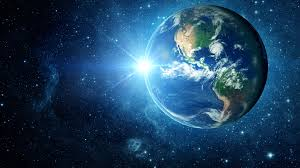

Las Fascinantes Galaxias

Las galaxias son enormes sistemas de estrellas, polvo y gas unidos por la gravedad. Existen miles de millones en el universo, y se clasifican en espirales, elípticas e irregulares.
La Vía Láctea es la galaxia donde se encuentra nuestro sistema solar. Se estima que contiene más de 200 mil millones de estrellas.
El Sistema Solar y los Planetas

El sistema solar está compuesto por ocho planetas que orbitan alrededor del Sol. Cada planeta tiene características únicas:
- Mercurio: el más cercano al Sol y el más pequeño.
- Venus: similar a la Tierra en tamaño, pero con temperaturas extremas.
- Tierra: el único planeta conocido con vida.
- Marte: el planeta rojo, potencialmente habitable en el futuro.
- Júpiter: el gigante gaseoso más grande del sistema solar.
- Saturno: famoso por sus impresionantes anillos.
- Urano: tiene una inclinación única y color azul verdoso.
- Neptuno: el más lejano, con vientos extremadamente rápidos.
Fenómenos Cósmicos Sorprendentes

El universo está lleno de fenómenos fascinantes:
- Supernovas: explosiones estelares que liberan enormes cantidades de energía.
- Agujeros negros: regiones donde la gravedad es tan intensa que nada puede escapar.
- Púlsares: estrellas de neutrones que emiten pulsos regulares de radiación.
- Exoplanetas: planetas que orbitan otras estrellas, muchos con condiciones similares a la Tierra.
Curiosidades del Universo

Algunas curiosidades asombrosas:
- La luz del Sol tarda 8 minutos y 20 segundos en llegar a la Tierra.
- Un día en Venus es más largo que su año.
- El universo observable tiene un diámetro de 93 mil millones de años luz.
- Hay estrellas que son millones de veces más grandes que nuestro Sol.